Study 19 · 6 October 2026
Construction site
25 stones, a new J every visit, floating over a floor. Two stones have fallen out by the barrier. Move the mouse to build it faster; it moves as one.
Open the page (move your mouse)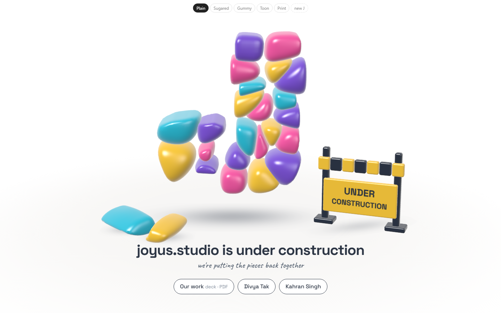
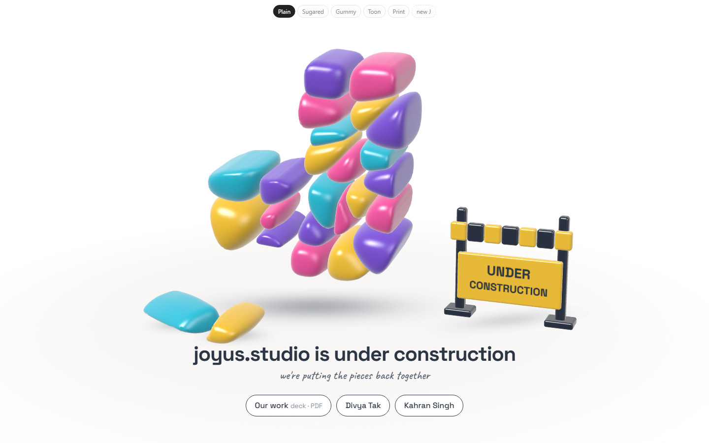
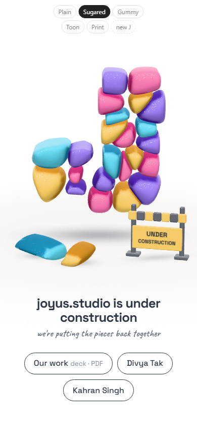
The five looks
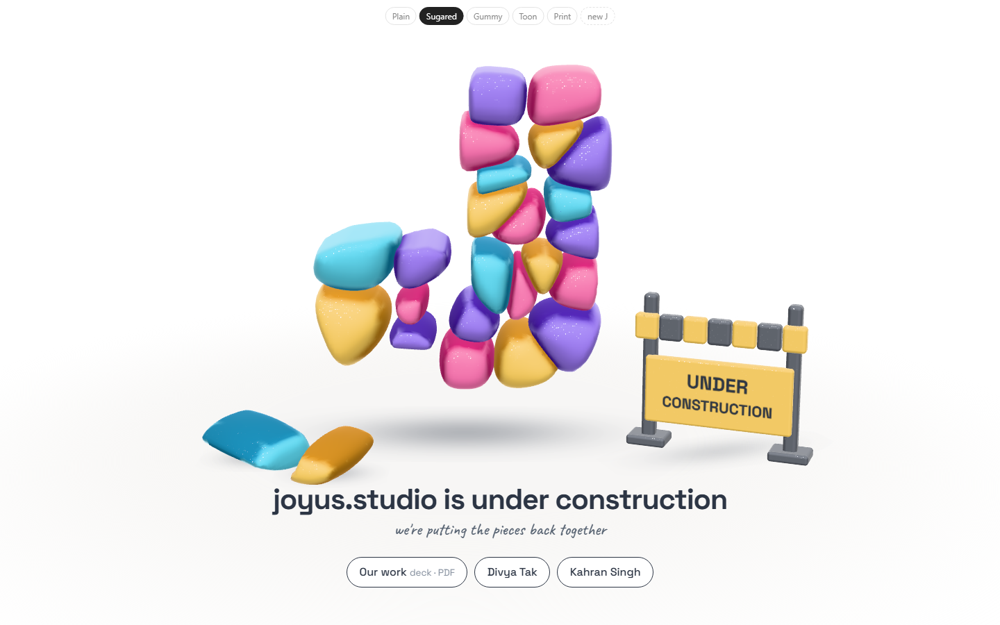
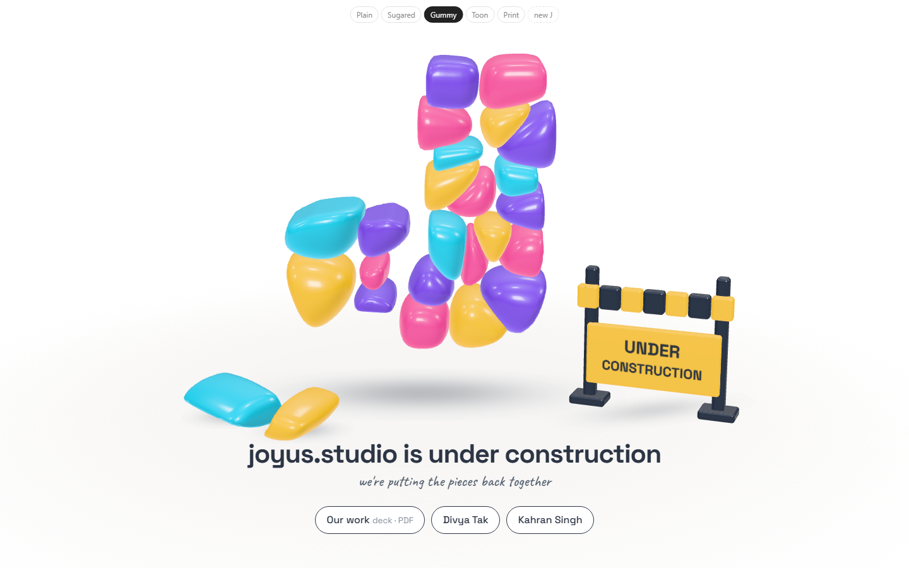
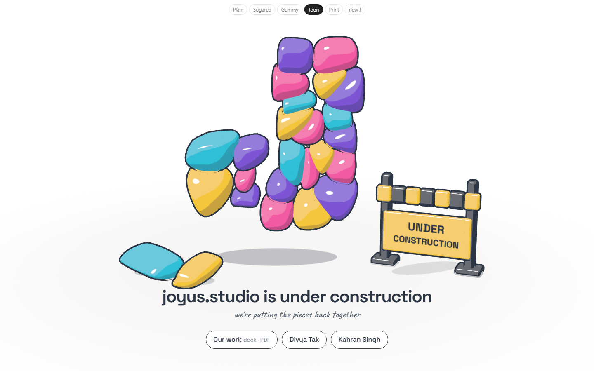
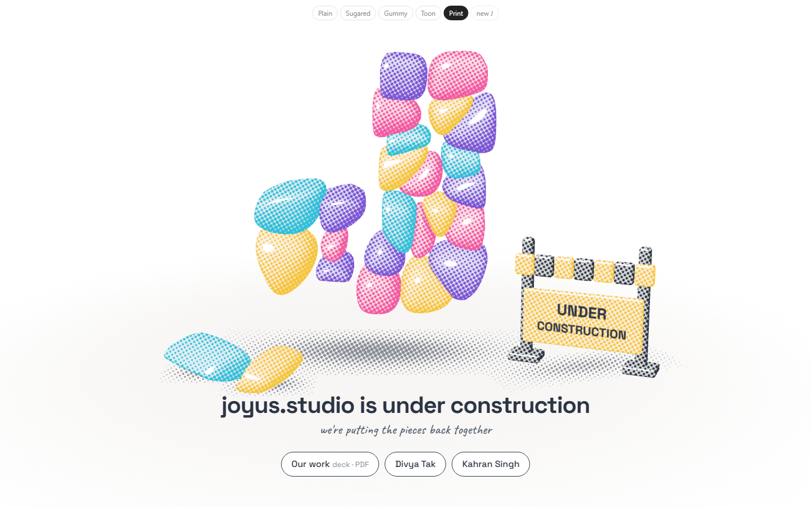
More blobs
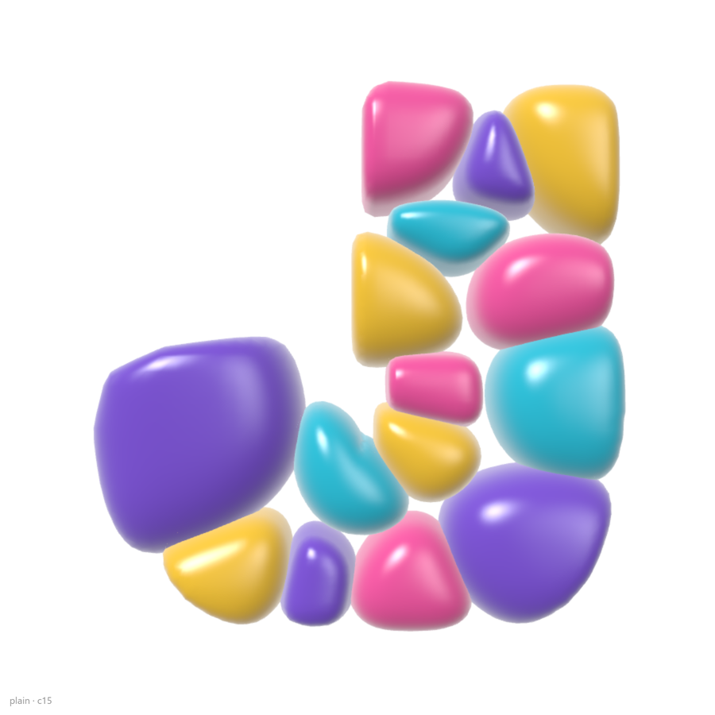
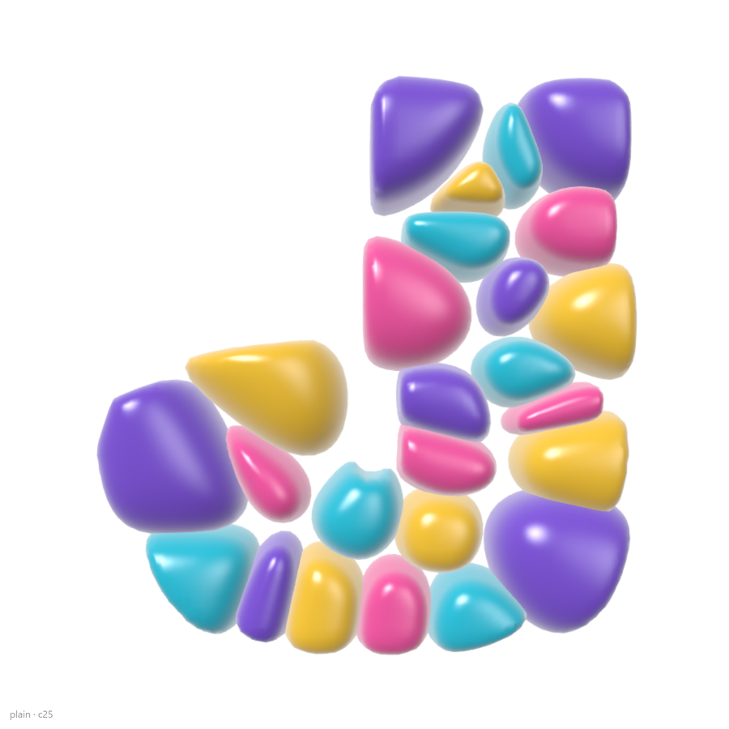
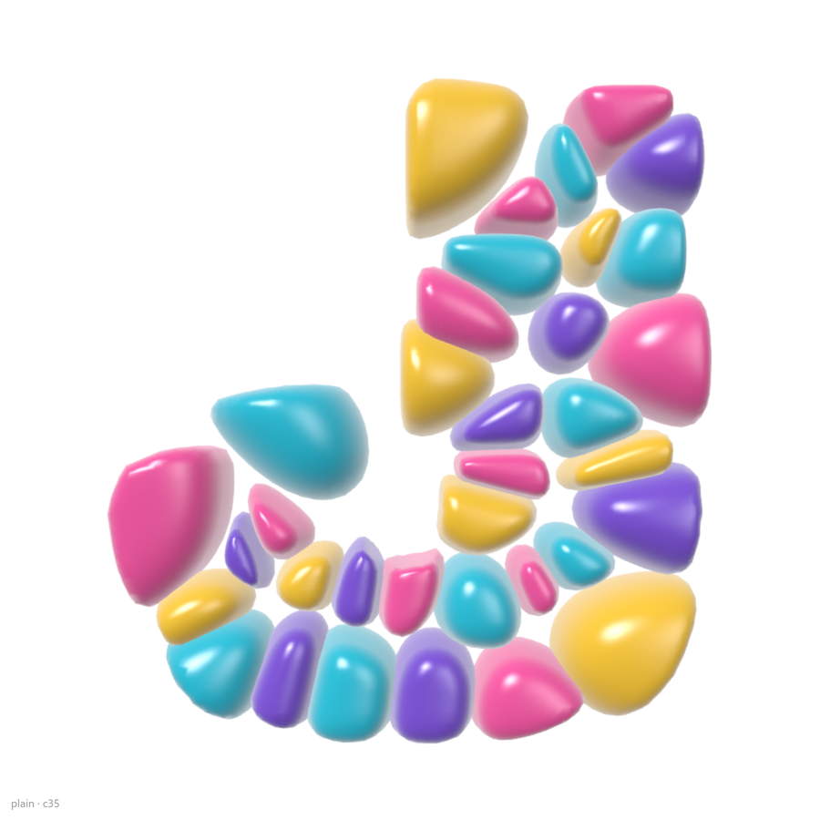
Random
Built live in the browser now (0.33 s, measured), so every visit gets its own J. Same J as the bake, to the last vertex. 60 random seeds: 59 kept all 25 stones.
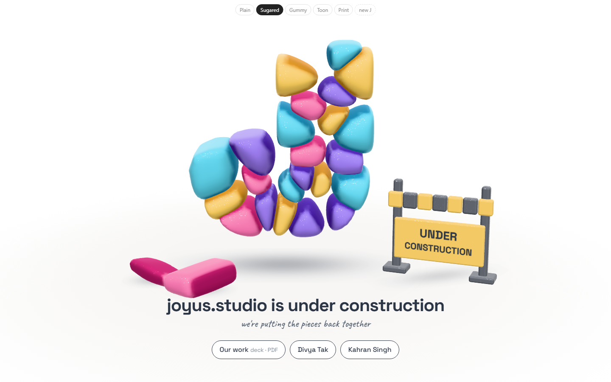
Wrong turns
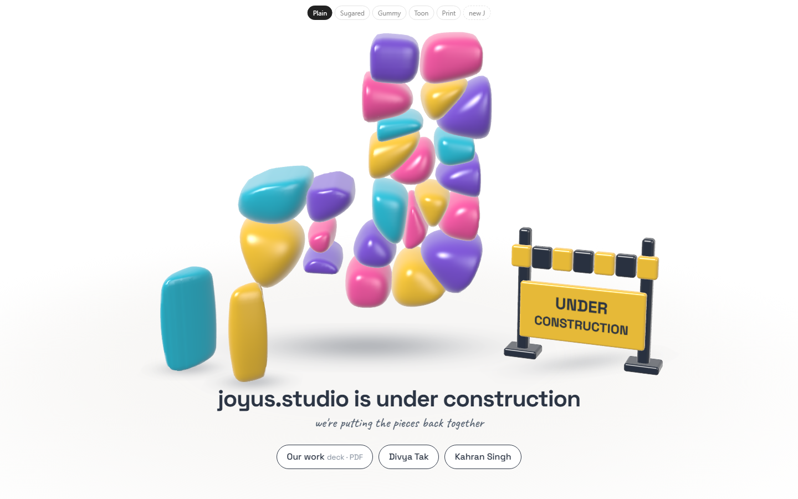
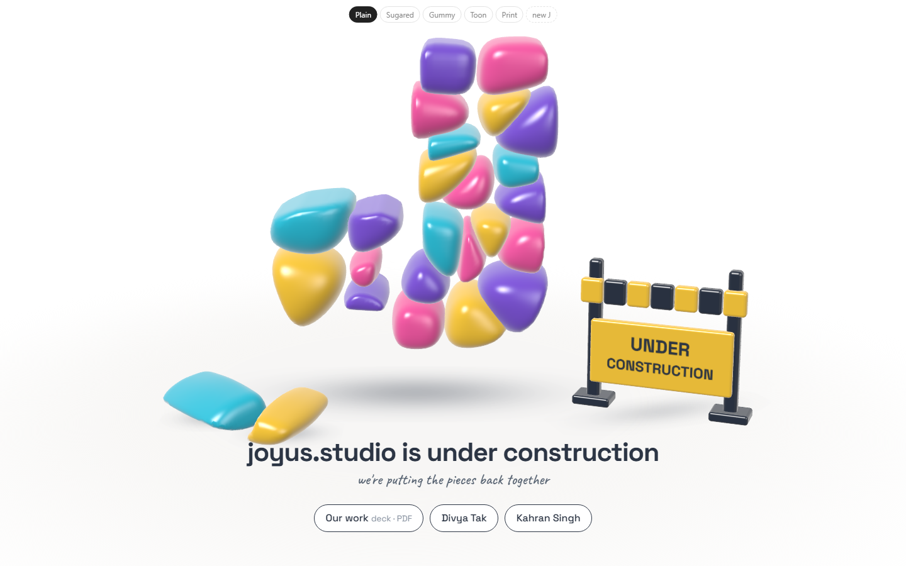
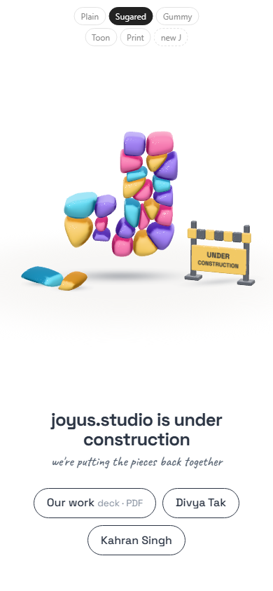
- One random J never finished building (rounding). Found by random seeds; now 8 run in every test.
- Shade where stones touch was too slow live (0.9–4.7 s). Now read off the neighbours' shapes, calibrated against the slow way.
Open
- Which look? The headline says "under construction" and so does the sign: keep both?
- Still open: deck link, your site's address, homepage only or every page.
Test: page-test.mjs (43 checks in a browser), equiv.mjs (live J = baked J), seeds.mjs (60 random Js); all read by check.cjs.